Director, cinematographer and editor based in Dubai. Food, hospitality, jewellery and documentary — from the idea to the final cut. Not the product alone, but the story around it.
Ongoing, Dubai and Cannes. All video for the brand, from idea to final cut.
@KOKORO.DXBShort films with a story to tell. Tap a film for sound.
Openings, launches, everyday content for restaurants and cafés — and live events.
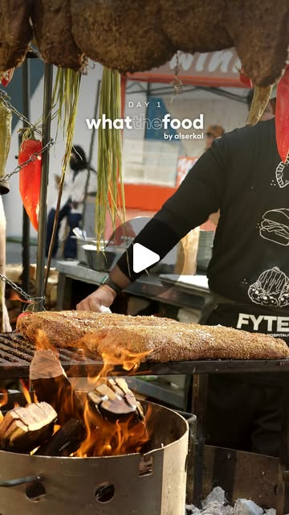
Reel ↗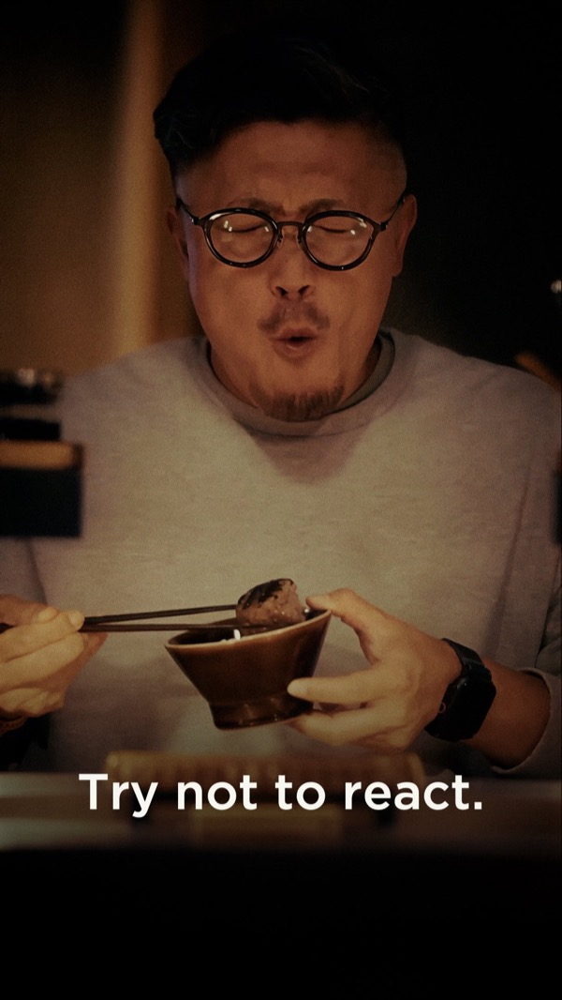
Reel ↗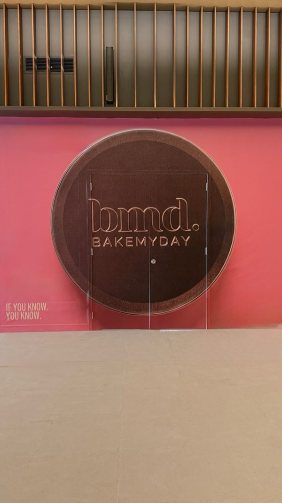
Post ↗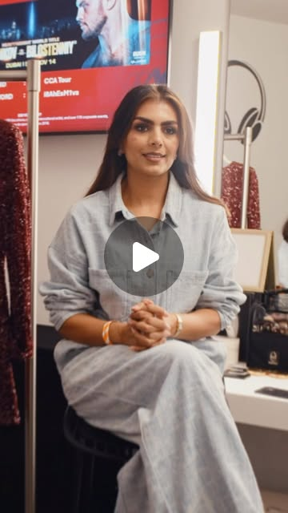
Reel ↗Earlier work from five years in Tokyo: documentary, event film and food.
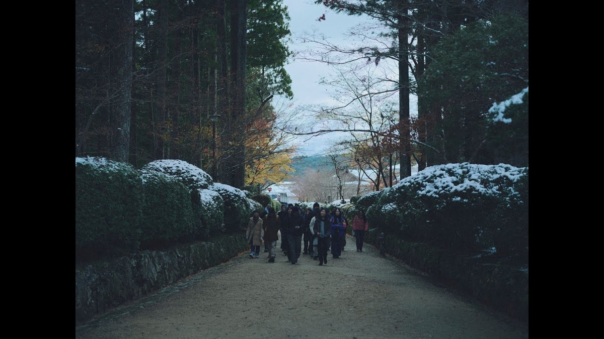
YouTube ↗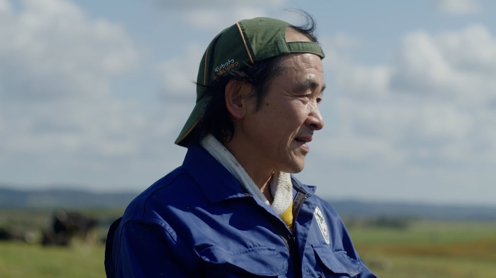
Vimeo ↗Restaurant stories for American Express Japan (Fukuoka, Kyoto) and event photography for the TABASCO® Neo Fes launch in Tokyo.
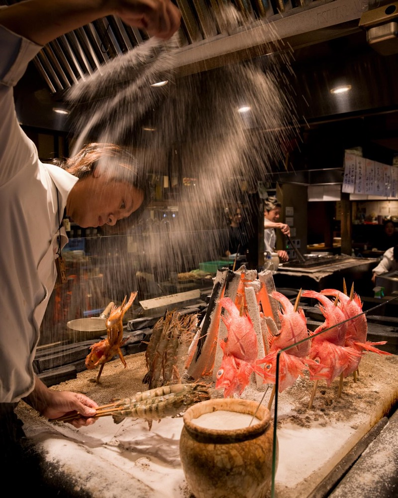
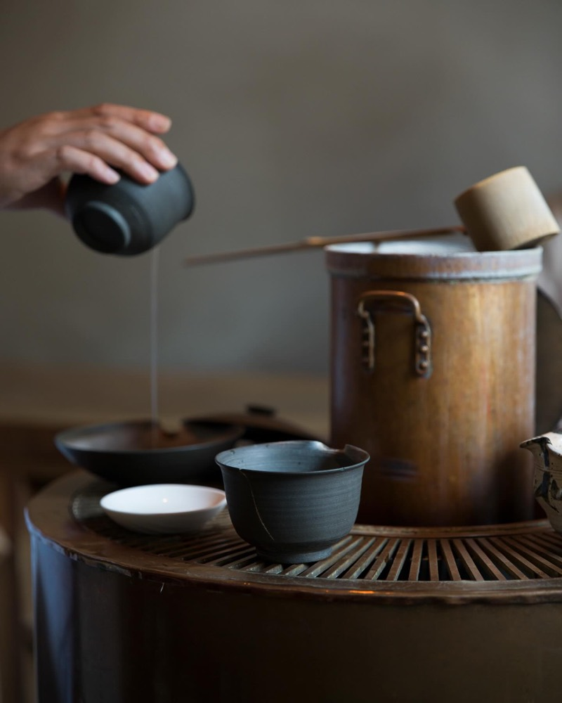
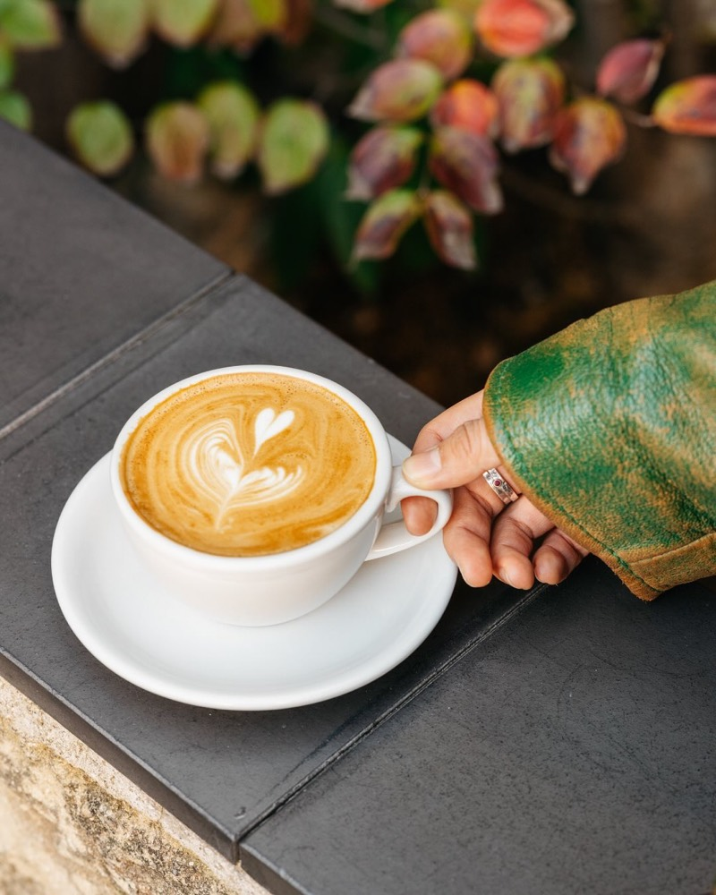
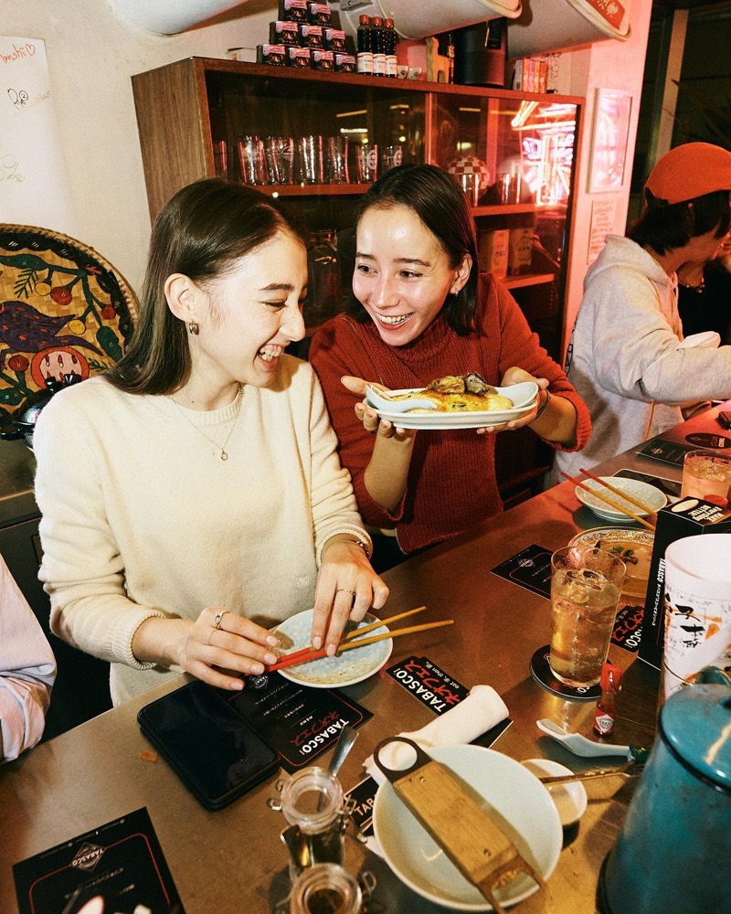
Outside food. Concept, content and the whole Instagram feed for a jewellery brand in Dubai.
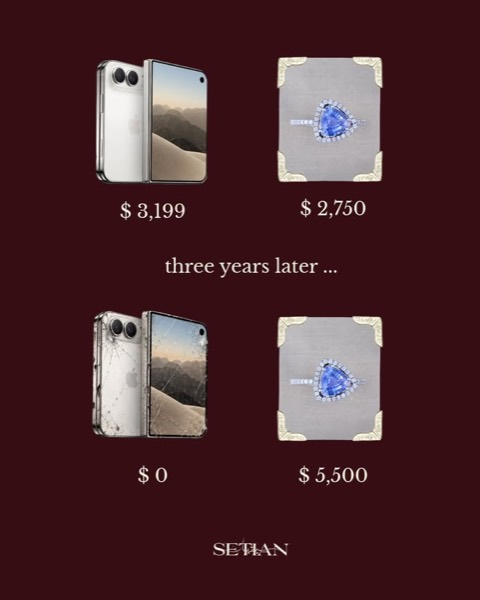
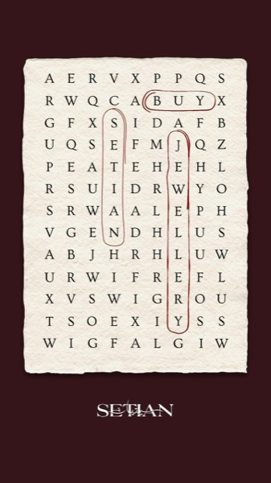
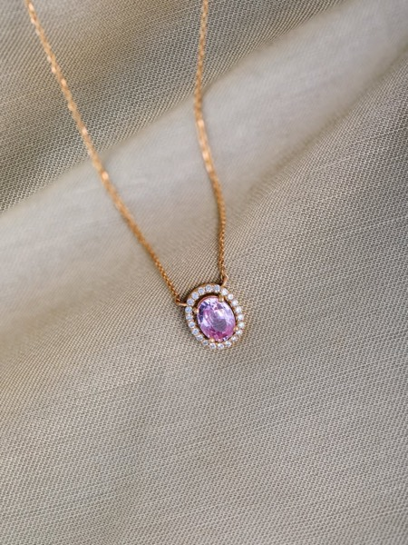
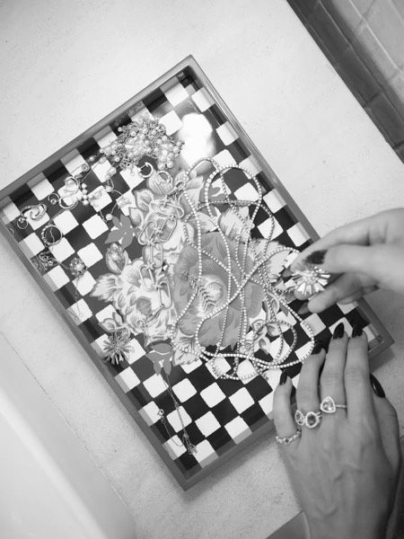
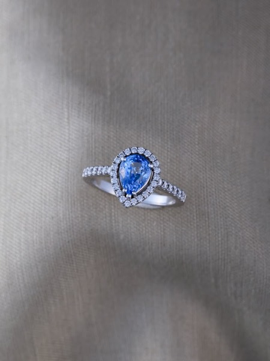
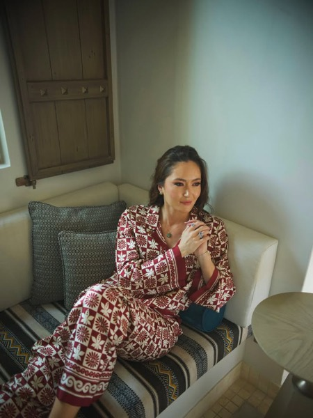
shotaronext@gmail.comshotaronext@gmail.com · Dubai